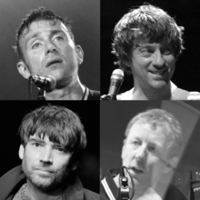
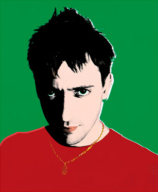

.png)
  Blur es un grupo británico de britpop y rock alternativo formado en 1988 en la ciudad de Londres, Inglaterra bajo el nombre de Seymour.3 La banda está integrada por el vocalista, tecladista y guitarrista Damon Albarn, el guitarrista y vocalista Graham Coxon, el bajista Alex James y el baterista Dave Rowntree.
El grupo se convirtió en una de las bandas más grandes e importantes del mundo durante la década de 1990. El álbum debut de Blur, Leisure, incorporó elementos de estilos como el «Madchester» y el shoegazing. Tras un cambio de estilo influenciado por algunos grupos ingleses de pop como The Kinks, The Beatles y XTC, la banda lanzó Modern Life Is Rubbish en 1993. En 1994 editaron Parklife que fue y sigue siendo uno de los discos más importantes y aclamados de la década de 1990, en 1995 lanzan The Great Escape que fue altamente elogiado por las críticas. Como resultado, la banda ayudó a popularizar el Britpop y alcanzó gran popularidad en el Reino Unido, junto a una batalla en las listas con sus rivales Oasis en 1995 denominada "La batalla del Britpop".